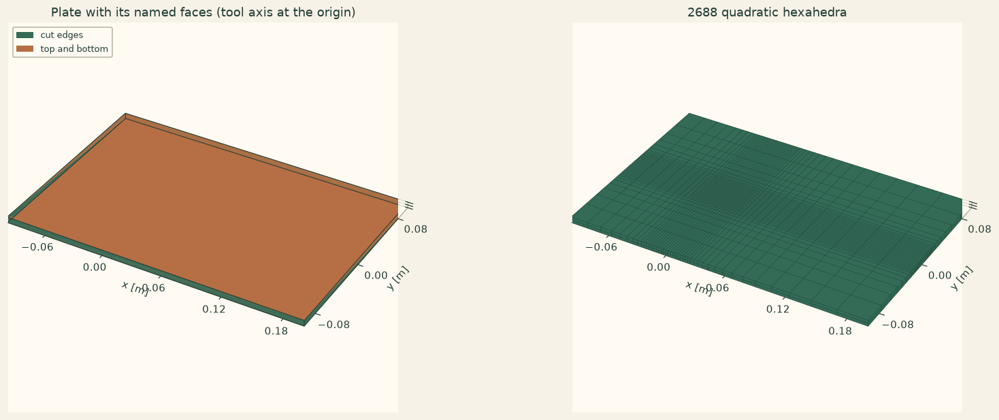

Docs › Examples › Friction stir welding of an aluminium plate
Heat transfer · 3D
Friction stir welding of an aluminium plate
The temperature field around the rotating tool travelling along the joint of an aluminium plate, seen from the tool.
Run locally with OneSimulation. The example downloads are free. Running them requires an activated runtime. Runtime Alpha 0.2.1a7 · CPython 3.13 on macOS (Apple Silicon), Ubuntu 22.04 (x86-64), and Windows x64. Installation and activation · View pilot plans. Scope of the reference checks.

What it computes
OneSimulation reads the plate from a STEP file, meshes it with graded hexahedra and solves the steady 3D heat equation in the frame of the tool, with the plate streaming past at the welding speed and the frictional heat entering under the tool. The script that builds the STEP file comes with the notebook.
What it checks
Beyond three tool radii the temperature along lines 0, 20 and 50 mm beside the weld follows Rosenthal's moving line source within 3.1 K, 1.9 K and 0.5 K; the peak under the tool reaches 411 °C.
Geometry
The notebook starts at the import of the CAD file friction_stir_welding_plate.step: STEP (AP242), readable by any CAD program, with the names of the faces that the boundary conditions use. Put it next to the notebook.


The geometry script
The script friction_stir_welding_plate_geometry.py builds the geometry with the CAD objects of OneSimulation and writes the file. Change a dimension there, run it, and run the notebook again.
"""Geometry of the OneSimulation example "Friction stir welding of an aluminium plate".
Builds the aluminium plate, 300 mm long in the welding direction (x), 200 mm wide and 6 mm thick,
with the CAD objects of OneSimulation and writes friction_stir_welding_plate.step. The tool axis
is the z axis; the plate reaches 100 mm behind and 200 mm ahead of it. The four cut edges form the
group edges and the two large faces the group faces.
"""
from onesim.cad.d3 import Box
plate = Box(length=0.3, width=0.2, height=0.006, origin=(-0.1, -0.1, 0.0))
f = plate.boundaries
plate = plate.grouped(
edges=f.x_min | f.x_max | f.y_min | f.y_max, faces=f.z_min | f.z_max
)
plate.save("friction_stir_welding_plate.step")The notebook
The complete notebook, cell by cell. Run it to produce the figures and the comparison printout.
In friction stir welding a rotating tool with a shoulder and a pin plunges into the joint between two plates and travels along it. Friction and plastic work heat the metal to a doughy state, the pin stirs both sides together, and the plates are joined without melting. The temperature field decides the quality of the weld.
Seen from the tool, the plate moves past it with the welding speed \(u=3\) mm/s and the field is steady. Heat is carried by the moving metal and conducted:
with an aluminium alloy (\(k=167\) W/(m K), \(\rho=2700\) kg/m³, \(c=896\) J/(kg K)). The tool puts \(Q=1\) kW into the 6 mm plate, spread through the thickness with a Gaussian profile of radius \(a=6\) mm about the tool axis, \(\dot q=Q/(\pi a^2d)\,e^{-r^2/a^2}\).
| face | condition |
|---|---|
edges, the four cut edges of the modelled plate | temperature of the infinite plate (Rosenthal) |
faces, top and bottom | insulated (losses to the backing plate and the air neglected) |
The plate comes from the CAD file friction_stir_welding_plate.step; the script friction_stir_welding_plate_geometry.py builds it with the CAD objects of OneSimulation.
Reference. D. Rosenthal, "The theory of moving sources of heat and its application to metal treatments", Trans. ASME 68 (1946) 849: for a line source in an infinite thin plate,
with \(x\) measured ahead of the tool and \(r\) the distance from its axis. A few tool radii away the Gaussian source acts like this line source; the cut edges of the model carry its values.
import numpy as np
from onesim.cad.d2 import Plane
from onesim.cad.exchange import load
from onesim.materials import IsotropicSolid
from onesim.meshing import Geometric, Piecewise, StructuredHexahedralMesher
from onesim.numerics import Numerics
from onesim.numerics.fem import FiniteElement, GalerkinAdvection, Lagrange
from onesim.numerics.linear import SparseDirect
from onesim.physics.heat_transfer import (
ConvectiveHeatTransfer,
FixedTemperature,
HeatFlux,
)
from onesim.simulation import Problem, Simulation
from onesim.visualization import plots, theme
from scipy.special import k0
theme.set()Geometry and mesh
load returns the plate with its named faces. The hexahedral mesh is 2.5 mm fine in a 40 mm square around the tool and grows towards the edges.
plate = load("friction_stir_welding_plate.step")
faces = plate.boundaries
(x0, y0, _), (x1, y1, thickness) = plate.bounding_box
grading = (
Piecewise(
(
(-0.02 - x0, Geometric(10, first=0.0025, toward="end")),
(0.04, Geometric(16, ratio=1.0)),
(x1 - 0.02, Geometric(16, first=0.0025)),
)
),
Piecewise(
(
(-0.02 - y0, Geometric(8, first=0.0025, toward="end")),
(0.04, Geometric(16, ratio=1.0)),
(y1 - 0.02, Geometric(8, first=0.0025)),
)
),
Piecewise(((thickness, Geometric(2, ratio=1.0)),)),
)
mesh = StructuredHexahedralMesher(
cells=tuple(g.cells for g in grading), grading=grading
).generate(plate)
view = plots.Camera(elevation=35, azimuth=-60)
fig = plots.figure(1, 2, size=(15, 5.5))
plots.geometry(
plate,
selection={"cut edges": faces.edges, "top and bottom": faces.faces},
labels=False,
camera=view,
title="Plate with its named faces (tool axis at the origin)",
ax=fig[0],
)
plots.mesh(
mesh,
groups=("all",),
legend=False,
camera=view,
title=f"{mesh.cell_count} quadratic hexahedra",
ax=fig[1],
)
plots.show()Model
ConvectiveHeatTransfer adds the transport by the prescribed velocity of the plate to the heat equation; quadratic elements with Galerkin advection solve it (the cell Péclet number is about 0.1, no stabilisation is needed).
power, speed, spot, ambient = 1000.0, 0.003, 0.006, 293.15
alloy = IsotropicSolid(
density=2700.0,
specific_heat_capacity=896.0,
thermal_conductivity=167.0,
youngs_modulus=6.9e10,
poisson_ratio=0.33,
thermal_expansion_coefficient=2.3e-5,
)
alpha = alloy.thermal_conductivity / (alloy.density * alloy.specific_heat_capacity)
rosenthal = lambda x, y, z: ambient + power / (
2 * np.pi * alloy.thermal_conductivity * thickness
) * np.exp(-speed * x / (2 * alpha)) * k0(
speed * np.maximum(np.hypot(x, y), 1e-6) / (2 * alpha)
)
model = ConvectiveHeatTransfer(
domain=plate.volume,
material=alloy,
velocity=lambda x, y, z: np.column_stack(
(np.full_like(x, -speed), np.zeros_like(x), np.zeros_like(x))
),
heating=lambda x, y, z: power
/ (np.pi * spot**2 * thickness)
* np.exp(-(x**2 + y**2) / spot**2),
)
problem = Problem(
name="Friction stir welding",
geometry=plate,
physics=(model,),
boundary_conditions=(
FixedTemperature(boundary=faces.edges, physics=model, value=rosenthal),
HeatFlux(boundary=faces.faces, physics=model, value=0.0),
),
)
temperature = (
Simulation(
problem=problem,
mesh=mesh,
numerics=Numerics(
spatial=FiniteElement(
element=Lagrange(order=2), convection=GalerkinAdvection()
),
linear_solver=SparseDirect(),
),
)
.solve_stationary()
.field(model.temperature)
)Results
The temperature along the weld line and along a parallel line 20 mm beside it, against Rosenthal's solution at distances of more than three tool radii from the axis.
x = np.linspace(x0 + 0.002, x1 - 0.002, 600)
line = lambda y: np.column_stack(
(x, np.full_like(x, y), np.full_like(x, thickness / 2))
)
lines = {f"y = {1e3 * y:.0f} mm": y for y in (0.0, 0.02, 0.05)}
simulated = {name: temperature.evaluate(line(y)).ravel() for name, y in lines.items()}
exact = {name: rosenthal(x, np.full_like(x, y), 0) for name, y in lines.items()}
far = {name: np.hypot(x, y) > 3 * spot for name, y in lines.items()}
print(f"Péclet number of the tool u a / (2 alpha) = {speed * spot / (2 * alpha):.3f}")
for name in lines:
print(
f"{name:10s}: largest deviation from Rosenthal beyond 3 a: {np.abs(simulated[name] - exact[name])[far[name]].max():.2f} K, "
f"peak {simulated[name].max() - 273.15:.1f} °C at x = {1e3 * x[simulated[name].argmax()]:+.1f} mm"
)
print(
f"peak temperature under the tool {np.ravel(temperature.evaluate([[0.0, 0.0, thickness / 2]]))[0] - 273.15:.1f} °C"
)Figure
The temperature on the top face with the isotherms pushed back into a wake behind the tool, and the temperature along the three lines with Rosenthal's solution.
celsius = lambda T, position: T - 273.15
fig = plots.figure(1, 2, size=(17, 6))
plots.section(
temperature,
plane=Plane(origin=(0, 0, thickness / 2), normal=(0, 0, 1)),
component=celsius,
limits=(20, 400),
contours=19,
subdivisions=2,
label="T [°C]",
title="Mid-plane temperature (tool at the origin, moving to +x)",
ax=fig[0],
)
plots.line(
y={name: (1e3 * x, simulated[name] - 273.15) for name in lines},
reference={
name: (1e3 * x, np.where(far[name], exact[name] - 273.15, np.nan))
for name in lines
},
xlabel="distance ahead of the tool x [mm]",
ylabel="T [°C]",
title="Simulation (lines), Rosenthal (dashed)",
legend="upper right",
ax=fig[1],
)
plots.show()Going further
Raise the welding speed: the isotherms are compressed ahead of the tool and stretched behind it, and the peak temperature falls. Add the losses to the backing plate (ConvectiveHeatFlux on the bottom face), or split the heat input into a shoulder flux on the top face and a pin source.